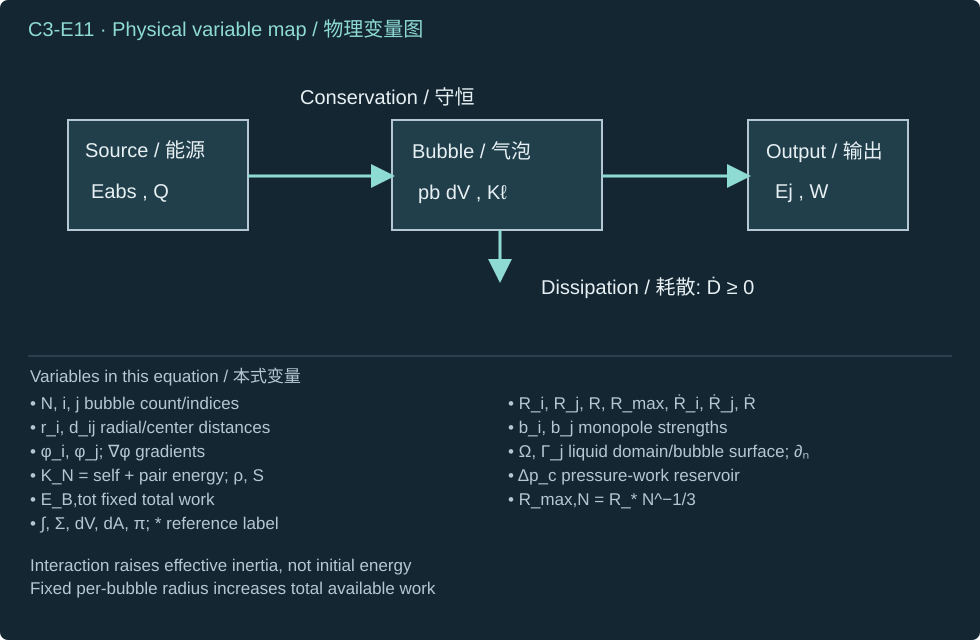
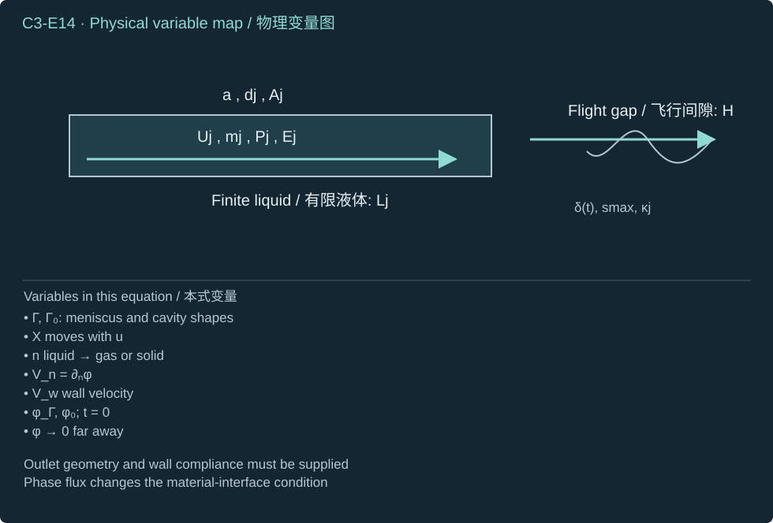

Jet formation, transport and impact; bubble-array coupling, energy allocation, and finite pressure/velocity limits.
射流形成、输运与冲击；气泡阵列耦合、能量分配及有限压力／速度极限。
How do individual sites combine into a finite, physically consistent mechanical output?
单个位点如何共同形成有限且符合物理约束的力学输出？
Derive shared-liquid coupling, compare three to five cavities under explicit energy constraints, then follow spatial launch, breakup and finite observed loading into transfer mechanics.
推导共享液体耦合，在明确能量约束下比较三至五个腔体，再沿空间发射、断裂及有限观察载荷接入转印力学。
Awaiting your explanations / 待您解释
What this chapter enables
本章学习目标
Calculate an interacting array without treating bubble count as a pressure multiplier.
计算相互作用阵列，避免将气泡数视为压力倍增因子。
Connect a finite source budget to spatial jet formation, emitted mass, useful momentum and coherent arrival.
将有限源预算联系至空间射流形成、喷出质量、有用动量及相干到达。
Define impact pressure at a fixed observer and carry the finite loading state into fracture analysis.
在固定观察量上定义冲击压力，并将有限载荷状态接入断裂分析。
Prerequisite. Chapters 1–2: liquid inertia, directional impulse, laser heating, activation and finite PFC pressure closure. No harmonic acoustic-forcing course is required.
1. Define the array, its energy constraint, and the desired output
1. 定义阵列、能量约束及所需输出
Our objective is to follow a finite laser-activated array from individual cavity histories to an emitted liquid jet, coherent arrival, and pressure measured at a stated receiver. Chapter 2 supplies each site's heat input, finite PFC inventory, and internal-pressure history. Here we solve mechanical controls with declared source histories; we do not claim to have calculated a target PFCjet maximum. The carrier liquid supplies most of the moving mass. Internal bubble pressure, external jet speed, exposed-surface pressure, and buried-interface traction remain distinct outputs.
Use fixed Cartesian bubble centers for the first interaction model; neglect center translation, gravity, walls, coalescence and shape modes. Require nearly spherical bubbles, radius much smaller than separation, low wall Mach number, and pressure communication faster than the radial event. At time zero the ideal-collapse controls start at their maximum radius with zero wall velocity, with constant positive ambient-minus-bubble pressure. Real PFC pressures must instead be coupled to Chapter 2. The spatial launch problem later uses the actual walls, outlets and moving interfaces. Its liquid-to-gas normal defines positive curvature for an exterior cylindrical jet and negative curvature for an interior spherical cavity.
Bubble indices; fabricated-site count and activated-bubble count (dimensionless).
气泡编号；制造位点数及已激活气泡数（无量纲）。
Ri,dij,s,Rmax
Ri,dij,s,Rmax
Radius, center distance, nearest-vertex pitch and maximum radius (m). Newton dots denote time derivatives.
半径、中心距离、相邻顶点间距及最大半径（m）；Newton 点表示时间导数。
ρ,μ,σb,σj,c
ρ,μ,σb,σj,c
Carrier density (kg m⁻³), viscosity (Pa s), bubble and jet surface tensions (N m⁻¹), sound speed (m s⁻¹).
载液密度（kg m⁻³）、黏度（Pa s）、气泡及射流表面张力（N m⁻¹）、声速（m s⁻¹）。
ϕ,Π,u
ϕ,Π,u
Velocity potential (m² s⁻¹), pressure impulse per area (Pa s), velocity field (m s⁻¹).
速度势（m² s⁻¹）、单位面积压力冲量（Pa s）、速度场（m s⁻¹）。
E,m,P,J
E,m,P,J
Energy (J), liquid mass (kg), directional momentum (N s), delivered force impulse (N s). Labels identify the particular system.
能量（J）、液体质量（kg）、方向动量（N s）、传递的力冲量（N s）；下标区分具体系统。
aj,dj,Lj,H,z
aj,dj,Lj,H,z
Jet radius, diameter, emitted length, flight gap and axial coordinate (m).
射流半径、直径、喷出长度、飞行间隙及轴向坐标（m）。
S,χ,C(χ),bi
S,χ,C(χ),bi
Neighbor reciprocal-distance sum (m⁻¹), interaction parameter, collapse-time coefficient (dimensionless), and source strength (m³ s⁻¹).
邻距倒数和（m⁻¹）、相互作用参数、塌缩时间系数（无量纲）及源强度（m³ s⁻¹）。
Γ,Ω,n,κ
Γ,Ω,n,κ
Moving interface, liquid domain, unit normal pointing out of liquid, and signed curvature (m⁻¹).
运动界面、液体域、指向液体外部的单位法向及带符号曲率（m⁻¹）。
g,δ,k,q,I0,I1
g,δ,k,q,I0,I1
Disturbance growth rate (s⁻¹; not gravity), amplitude (m), wavenumber (m⁻¹), dimensionless wavenumber and modified Bessel functions. The pitch remains the distinct symbol s.
Liquid/receiver impedance (Pa s m⁻¹), observer area (m²), averaging time (s) and observed mean excess pressure (Pa).
液体／接收体阻抗（Pa s m⁻¹）、观察面积（m²）、平均时间（s）及观察平均超压（Pa）。
∂t,∇,∇2,∫,∑
∂t,∇,∇2,∫,∑
Fixed-position time derivative, spatial gradient/Laplacian, integral and finite sum. Powers are arithmetic powers; subscripts label sites or physical roles.
Step 1 — distinguish five uniformities: core inventory, carrier volume, pitch, optical fluence and activation time. Separate liquid cells can be summed only after their finite outputs and arrival times are known. Bubbles sharing a liquid domain move common liquid and modify one another's ambient pressure. A regular pattern therefore supplies geometry, not a count-proportional pressure law.
Symbols before Eq. (C3-E01).Nd is positive integer site count; Nb is the random activated count; pa∈(0,1] is identical independent activation probability. E, Var and Pr denote expectation, variance and probability; CV is standard deviation divided by nonzero mean. All are dimensionless.
Count reproducibility and complete activation are different tests.
数量重复性与全部激活是不同检验。
For 25 sites and activation probability 0.95, the mean count is 23.75 and relative standard deviation is 4.588%. Nevertheless, complete activation occurs with probability 0.27739. This calculation assumes independent Bernoulli trials; common heating and mechanical feedback can invalidate it. Counting bubbles alone does not verify a fully actuated, symmetric load.
Symbols before Eq. (C3-E02).F(r) is Gaussian pulse fluence at radial distance r (J m⁻²); F0>0 is central fluence. RA>0 encloses the array and w>0 is the Gaussian 1/e² radius (m). ϵ∈(0,1) is allowed fractional edge decrease. exp and ln are exponential and natural logarithm of dimensionless arguments.
An optical condition can be checked before solving cavity mechanics.
求解腔体力学前即可检验光学条件。
Taking logarithms preserves order because the logarithm is increasing. Multiplying by minus one reverses the inequality; the denominator is positive because the allowed decrease lies between zero and one. A 10% decrease requires a beam radius at least 4.35688 times the enclosing array radius. Increasing beam width can improve uniformity while increasing energy deposited outside the array. This does not determine the absorbed energy at individual cores.
2. Derive the first bubble–bubble interaction from the velocity potential
2. 从速度势推导首阶气泡相互作用
Step 2 — use incompressibility to obtain one source. At a distance from a fixed spherical center, radial volume flux is constant over concentric spheres. Integrate the velocity radially and choose zero potential at infinity. For another well-separated center the source potential is almost spatially uniform over that bubble. Its fixed-position time derivative supplies the leading surrounding-pressure correction through unsteady Bernoulli.
Symbols before Eq. (C3-E03).j labels the emitting bubble and i=j a receiving center. Rj(t)>0, rj≥Rj, dummy radius ξ and fixed dij>0 are lengths (m); t is time (s). R˙j,R¨j are radius derivatives (m s⁻¹, m s⁻²). uj is radial velocity (m s⁻¹); ϕj is velocity potential (m² s⁻¹). ∂t holds position fixed; ∫ is radial integration, ∞ the zero-potential far field; π is dimensionless.
A moving spherical volume produces a monopole potential.
运动球体体积产生单极子速度势。
Symbols before Eq. (C3-E04).i,j=1,…,Nb are distinct bubble indices; pj→i′ is source j's pressure disturbance at i, pext,i external pressure and p∞ remote pressure (Pa). ρ is constant carrier density (kg m⁻³); ϕj is potential (m² s⁻¹); t is time (s), ∂t its fixed-position derivative. Rj,dij are positive lengths (m), dots time derivatives. ∑j=i adds all other sources; ≃ marks the leading far-separated approximation.
The correction changes surrounding pressure; it is not a new energy reservoir.
该修正改变周围压力，并不增加新的能量库。
The product rule supplies both terms in the numerator; keeping only the radius acceleration would be inconsistent. Each term divided by separation has unit m² s⁻², which density converts to pressure. The omitted squared-speed Bernoulli term, nonuniform pressure over the receiver, translation and reflected fields must remain small. Positive volume acceleration raises surrounding pressure; the correction can have either sign during a full event. A pressure-lowered surface-cavitation experiment shows shielding and later collapse of interior bubbles, with spherical modeling failing during final jetting. That is a relevant interaction benchmark, not a laser-PFC calibration. Bremond et al. (2006)
分子两项均由乘积法则产生；仅保留半径加速度项不自洽。各项除以间距后单位为 m² s⁻²，再乘密度即为压力。被忽略的 Bernoulli 速度平方项、接收泡上的非均匀压力、平移及反射场必须足够小。体积正加速度升高周围压力；完整事件中修正可以取两种符号。降压表面空化实验显示内部气泡受到屏蔽并延迟塌缩，最终射流阶段球形模型失效。它是相关相互作用对照，而非激光 PFC 标定。Bremond 等（2006）
Symbols before Eq. (C3-E05).i,j index activated bubbles; Ri,Rj,dij>0 are lengths (m), dots are time derivatives. pb,i is bubble i's internal pressure and p∞ remote pressure (Pa). σb is bubble–carrier tension (N m⁻¹), μ carrier dynamic viscosity (Pa s), ρ carrier density (kg m⁻³). Bi is the isolated radial driving expression (m² s⁻²); ∑j=i sums other sources. Every term has unit m² s⁻².
式（C3-E05）前的符号定义。i,j 标记已激活气泡；Ri,Rj,dij>0 为长度（m），点为时间导数。pb,i 为第 i 个气泡内压，p∞ 为远场压力（Pa）。σb 为泡—载液张力（N m⁻¹），μ 为载液动力黏度（Pa s），ρ 为载液密度（kg m⁻³）。Bi 为孤立泡径向驱动表达式（m² s⁻²）；∑j=i 对其他源求和。各项单位均为 m² s⁻²。
Substitute the corrected external pressure into each radial balance.
将修正外压代入各径向平衡。
Step 3 — move the neighbor-pressure term to the left, producing Eq. (C3-E05). This is a coupled acceleration system, not a collection of isolated trajectories followed by multiplying their pressures. The phase-pressure law still belongs to each individual site. Taking separations to infinity removes the interaction terms and recovers the single-bubble equation. Taking radii comparable to separation violates the approximation even if the formula can still be evaluated numerically.
3. Work the three-, four-, and five-bubble controls; then fix total energy
3. 求解三、四、五泡对照，再固定总能量
Step 4 — constrain identical cavities to a regular polygon, with identical initial data and pressure histories. Cyclic symmetry makes each neighbor-distance sum equal, permitting one shared radius. The following distance formula derives the sums instead of treating bubble count as a coefficient. Here pitch means neighboring-vertex distance, not polygon circumradius.
Symbols before Eq. (C3-E06).N∈{3,4,5} is regular-polygon bubble count; k=1,…,N−1 counts steps from one vertex. s>0 and dk>0 are neighboring-vertex and k-step center distances (m). SN is the reciprocal-distance sum (m⁻¹). φg is the dimensionless golden ratio; sin takes angles in radians, π is dimensionless, and ∑ sums the stated steps.
Equal geometric sums justify a shared radial trajectory in this constrained control.
相同几何和使这一约束对照可采用共同径向轨迹。
Symbols before Eq. (C3-E07).p∞,pb are constant ambient and internal pressure (Pa), Δpc>0 their collapse-driving difference. S=SN≥0 is the fixed reciprocal-distance sum (m⁻¹); R(t)>0 and Rmax>0 are shared and initial maximum radius (m). Dots are time derivatives, t=0 the initial time (s); ρ>0 is carrier density (kg m⁻³). Surface tension and viscosity are omitted in this ideal control; SR is dimensionless.
Substitution of the common radius collects the two interaction contributions.
代入共同半径后合并两种相互作用贡献。
Step 5 — solve the reduced equation on the inward branch. Away from the initial turning point, introduce squared wall speed as a function of radius. Its derivative is twice wall acceleration by the chain rule. The resulting linear equation has integrating factor proportional to radius cubed times the interaction factor; the logarithmic derivatives shown below establish that choice. The solution extends continuously to the initial zero-speed point.
Symbols before Eq. (C3-E08).y(R)≥0 is squared wall speed (m² s⁻²), y′=dy/dR (m s⁻²); R>0 is radius (m) and dots its time derivatives. S≥0 is neighbor sum (m⁻¹), ρ>0 density (kg m⁻³), Δpc>0 pressure difference (Pa). ℓ∗>0 is an arbitrary constant reference length (m), inserted solely to make the logarithm dimensionless; it cancels from the integrating factor. ln is natural logarithm; d/dR differentiates in radius. Division by R˙ is used only on the moving branch.
Every term of the integrating factor can be reconstructed from the radial equation.
积分因子的每一项均可从径向方程重构。
Symbols before Eq. (C3-E09).R∈(0,Rmax] and Rmax are current/maximum radius (m); ξ is dummy radius (m), dots radius time derivatives. y=R˙2 (m² s⁻²), S≥0 neighbor sum (m⁻¹), ρ>0 density (kg m⁻³), Δpc>0 pressure difference (Pa). Brackets mean upper minus lower endpoint, ∫ definite integration and the nonnegative root; the explicit minus sign selects collapse.
The initial condition removes the integration constant and the physical branch fixes the sign.
初值消去积分常数，物理分支固定符号。
Symbols before Eq. (C3-E10).tc is formal collapse time (s); R,Rmax>0 are radii (m), R˙ wall velocity (m s⁻¹), ∣∣ absolute value. ρ is density (kg m⁻³), Δpc>0 pressure difference (Pa), S≥0 neighbor sum (m⁻¹). x∈[0,1] is dimensionless integration radius and χ≥0 interaction strength. C and C′=dC/dχ are dimensionless; integrals are convergent improper integrals at x=1.
Shared-liquid interaction increases this constrained collapse time.
共享液体相互作用使这一约束塌缩时间增加。
At the upper endpoint the integrand is proportional to the inverse square root of the distance to the endpoint, so it is integrable. The differentiated integrand is positive and has the same integrable endpoint form, justifying both differentiation and monotonicity. For zero interaction, substitution of cubed radius reproduces the Chapter 1 Rayleigh coefficient 0.9146813565. Numerical quadrature for radius 30 μm, pitch 200 μm, density 1000 kg m⁻³ and pressure difference 100 kPa yields the following controls. Maximum radius divided by nearest distance is 0.15: a leading approximation, not an error-certified exact prediction.
Step 6 — verify the shared-liquid kinetic energy, including the pair cross terms. Green's identity converts an interaction integral to the emitting bubble boundary; the outward normal of the liquid points into the cavity. A positive outward bubble velocity therefore gives a negative liquid-normal derivative. Multiplying two negative boundary factors makes the cross contribution positive for synchronized motion.
Symbols before Eq. (C3-E11).KN is leading cluster liquid kinetic energy (J); N count and i,j site indices. Ri,Rj are site radii, ri radial distance from i, dij center separation, R common radius, Rmax its initial maximum, Rmax,N fixed-total-work maximum and R∗ isolated reference radius (all m); dots are time derivatives. bi,bj are source strengths Ri2R˙i,Rj2R˙j (m³ s⁻¹); ϕi,ϕj source potentials (m² s⁻¹), Ω liquid domain and Γj bubble boundary. ∇ gradient, ∂n liquid-outward normal derivative, dV,dA,dri volume/area/radial elements (m³, m², m), ∫ volume/surface/radial integral and ∑ finite sum; i<j counts each unordered pair once; ∣∣ is vector norm and ∞ the far radial endpoint. S equal reciprocal-distance sum (m⁻¹), ρ density (kg m⁻³), Δpc pressure difference (Pa), EB,tot fixed initial work (J), π dimensionless. Far separation justifies retaining self and leading pair integrals; ∗ labels a reference.
(C3-E11) · Leading-model energy check and fixed-total-work comparison
bi∫Ω∣∇ϕi∣2dV∫Ω∇ϕi⋅∇ϕjdVKNKNEB,tot=Ri2R˙i,ϕi=−bi/ri,KN≃2ρi,j=1∑N∫Ω∇ϕi⋅∇ϕjdV,≃4πbi2∫Ri∞ri−2dri=4πRi3R˙i2,≃∫Γjϕi∂nϕjdA≃(−bi/dij)(−R˙j)4πRj2=dij4πbibj(i=j),≃2πρi∑Ri3R˙i2+4πρi<j∑dijbibj=2πρNR3(1+SR)R˙2,=34πNΔpc(Rmax3−R3)in the leading symmetric model,=N34πΔpcRmax,N3=34πΔpcR∗3,Rmax,N=R∗N−1/3.

The integrated trajectory conserves the leading energy budget.
积分轨迹守恒首阶能量预算。
Integrating inverse squared radius gives the reciprocal lower radius because the far endpoint vanishes. The harmonic source from another bubble is nearly constant on the emitting surface, giving the shown pair integral. Ordered cross terms occur twice in the squared total gradient; unordered-pair notation supplies the coefficient four. For identical motion each bubble's reciprocal-distance sum is the same, so pair counting gives half the count times that sum. Substituting Eq. (C3-E09) cancels the interaction factor and equals released pressure work. At fixed total work take the positive cube root in the final row. With an isolated reference radius of 30 μm, three, four and five bubbles have radii 20.80084, 18.89882 and 17.54411 μm. At 200-μm pitch their formal times become 2.05687, 1.89946 and 1.77980 μs. Shorter time now reflects smaller cavities; it proves neither stronger jets nor optical-efficiency gain.
A center-and-four-arm cross is not a pentagon. If the arm length is the pitch, the center's reciprocal-distance sum is four divided by pitch; an outer site's sum is the sum of one, one half and the square root of two, divided by pitch. The different sums prevent an identical shared-radius history. Likewise, a large array needs an averaging length much larger than pitch and much smaller than macroscopic variation length before homogenization is justified; volume fraction alone does not supply that separation.
Symbols before Eq. (C3-E12).ϕb is dimensionless instantaneous bubble-volume fraction; Vi bubble volume and VΩ>0 representative-region volume (m³), Nb bubble count, Ri,R,s radius/common cubic-lattice radius/pitch (m), π dimensionless. ϕ(x,t) is weak far-field potential (m² s⁻¹), p′ pressure disturbance (Pa), x observation position (m), t time (s), ri>0 distance to source i (m), c sound speed (m s⁻¹), ρ density (kg m⁻³). Dots on Vi are volume time derivatives (m³ s⁻¹, m³ s⁻²); t−ri/c is retarded time. ∑ sums sources; ≃ is a distant, compact, weak-source approximation.
A spatial sum needs source histories and travel times, not only site count.
空间求和需要源历程及传播时间，不能只给位点数。
Step 7 — replace instantaneous source time by retarded time only in the weak, compact-source wave control. Differentiate the far-field potential at fixed observation position to obtain the pressure row. Instantaneous bubble-volume fraction differs from initial liquid-PFC loading; a planar array needs a stated layer thickness before assigning region volume. This is a propagation estimate, not a complete compressible interaction model. If neighbors alter the source histories, those histories must first be solved consistently. At 200 μm separation and 1480 m s⁻¹ sound speed, travel time is 0.13514 μs; it is short against a 3-μs radial control but not against an arbitrary nanosecond laser pressure pulse. Regular spacing does not remove edges, propagation delay or nonlinear shielding.
4. Close spatial jet formation; pay for focusing with momentum and energy
4. 闭合空间射流形成，并核算聚焦的动量与能量
Step 8 — replace spherical radii by a resolved liquid domain when an outlet meniscus deforms or a re-entrant finger enters a cavity. A radial calculation supplies cavity scale and source timing, but has no directional jet shape. For an initially irrotational, inviscid, incompressible carrier over the inertial launch interval, introduce a velocity potential. Here the liquid interfaces are treated as material surfaces; appreciable simultaneous evaporation requires the Chapter 2 mass-flux jump instead of the following kinematic approximation.
Symbols before Eq. (C3-E13).u(x,t) is velocity (m s⁻¹), ϕ(x,t) potential (m² s⁻¹), x spatial position (m), t time (s), and Ω(t) the moving liquid domain. ∇, ∇⋅ and ∇2 are spatial gradient, divergence and Laplacian; the central dot is an actual contraction, not an equation separator.
Geometry enters through the domain and its boundary conditions.
几何通过区域及边界条件进入。
Symbols before Eq. (C3-E14).X is a material interface point (m); t is time (s), d/dt its trajectory derivative. u is liquid velocity and Vw prescribed wall velocity (m s⁻¹). n is outward from liquid toward gas or solid, unitless; Vn normal interface speed (m s⁻¹), ∂nϕ=∇ϕ⋅n, and ϕ potential (m² s⁻¹). Γ is the complete moving interface; ϕΓ its potential; Γ0,ϕ0 are initial data. Arrows indicate the stated far-field limit.
dtdX(Γ,ϕΓ)t=0=u(X,t),Vn=∂nϕ,∂nϕ=Vw⋅non walls,=(Γ0,ϕ0),ϕ→0in a quiescent far field.

A potential equation without initial shape and wall data cannot predict a jet.
无初始形状及壁面数据的势方程无法预测射流。
Symbols before Eq. (C3-E15).pl,pg,p∞ are interface-liquid, gas and remote pressures (Pa); σ is the tension appropriate to that interface (N m⁻¹). κ is signed total curvature (m⁻¹), ∇s⋅ surface divergence, n the liquid-to-gas unit normal, R inner-cavity radius and aj exterior-cylinder radius (m). ϕΓ and ϕ are surface/bulk potential (m² s⁻¹); u velocity (m s⁻¹), ρ density (kg m⁻³), t time (s). D/Dt is the material derivative, ∂t fixed-position derivative, ∇ spatial gradient, ∣∣ Euclidean norm; labels cavity and jet select geometries.
Signed curvature and the material derivative keep the dynamic condition consistent.
带符号曲率及材料导数使动力学条件自洽。
Step 9 — normal stress supplies the first row of Eq. (C3-E15). Eulerian Bernoulli contains minus one half of squared speed when solved for the fixed-position potential derivative; adding velocity dotted with its gradient produces the plus sign in the material derivative. At a sphere the surface potential is minus radius times wall speed. Its material derivative is minus squared wall speed minus radius times acceleration, so the condition recovers the spherical balance with resisting surface tension. This displayed reference uses a quiescent reservoir; a finite sealed cell needs its actual pressure/volume boundary and potential gauge instead of a fictitious far field. Solve the harmonic boundary-value problem and advance shape/potential until topology or compressibility invalidates the stage. An internal re-entry jet and an exterior meniscus jet are distinct events; one is not proof of the other. The calculations of Peters et al. illustrate why resolving the free surface matters. [R4]
Symbols before Eq. (C3-E16).Π(x),Π0 are pressure impulse per area (Pa s), p,pref total and reference pressure (Pa), x position (m), t,t0,τp>0 time/start/pulse duration (s). Δu velocity increment and U column speed (m s⁻¹), ρ>0 density (kg m⁻³), z∈[0,L] axial coordinate, L>0 length (m), A>0 area (m²), m>0 liquid mass (kg). J is total directional force impulse (N s), Ekinetic energy (J). ∇,∇2 are gradient/Laplacian; ∫ time integration and vertical bars denote a stated fixed-budget branch. The pulse approximation freezes geometry and neglects integrated convection and viscosity.
The pressure-impulse field and the total energy constraint must be compatible.
压力冲量场必须与总能量约束相容。
Step 10 — integrate momentum over a short pulse and then take divergence using incompressibility. The straight-column solution obeys the two end impulse values and insulating sidewalls. Its pressure-impulse gradient gives uniform initial speed; reducing area alone at fixed impulse per area does not increase that speed. At fixed total impulse, reducing liquid mass fourfold raises speed fourfold and required kinetic energy fourfold. At fixed energy it raises uniform speed only twofold and reduces momentum by one half. These are different experiments. A concave moving meniscus concentrates a solved spatial velocity field, but mass conservation alone does not pay for that concentration. The geometry-frozen condition additionally needs small pulse displacement and viscous effects; several acoustic crossings alone do not establish it. [R2]
Symbols before Eq. (C3-E17).Q is steady volume flow (m³ s⁻¹), ain>aj>0 solid-tube inlet and free cylindrical-jet radii (m); Uin,Uj are uniform speeds (m s⁻¹), α dimensionless area ratio. pin,pg inlet and gas pressures, Δploss≥0 prescribed loss (Pa); ρ>0 density (kg m⁻³), σjjet–gas tension (N m⁻¹), π dimensionless. The square root requires nonnegative numerator. This is a steady inviscid-core nozzle control with optional loss, not a transient cavity solution.
Specify either source pressure or flow and solve the compatible remaining quantity.
指定源压力或流量，再求其余相容量。
For a 40-μm inlet radius, 10-μm outlet radius and 3 m s⁻¹ inlet speed, continuity gives 48 m s⁻¹ outlet speed. With density 1000 kg m⁻³, tension 0.072 N m⁻¹ and zero loss, the required inlet overpressure is 1.1547 MPa: 1.1475 MPa kinetic increase plus 7.2 kPa capillary pressure. If overpressure is instead fixed at 0.20 MPa, Eq. (C3-E17) gives 19.6752 m s⁻¹ outlet speed and 1.22970 m s⁻¹ inlet speed. Holding the original inlet speed and the smaller pressure simultaneously would violate energy conservation. This solved control reveals a budget error; the actual evolving meniscus still requires Eqs. (C3-E13–15).
入口半径 40 μm、出口半径 10 μm、入口速度 3 m s⁻¹ 时，连续性给出出口速度 48 m s⁻¹。密度 1000 kg m⁻³、张力 0.072 N m⁻¹、零损失时，所需入口超压为 1.1547 MPa：动能增量对应 1.1475 MPa，毛细压力为 7.2 kPa。若超压改为固定 0.20 MPa，式（C3-E17）给出出口速度 19.6752 m s⁻¹、入口速度 1.22970 m s⁻¹。同时保持原入口速度及较小压力会违反能量守恒。这个已解对照揭示预算错误；实际演化弯液面仍需式（C3-E13—15）。
Symbols before Eq. (C3-E18).Aj is area (m²), dj,Lj>0 diameter/emitted length (m), ρ carrier density (kg m⁻³), mj>0 emitted mass (kg); the cylinder expression assumes uniform area/density. Mj is the emitted material collection, dm mass element (kg), u velocity field, Urms mass-weighted root-mean-square speed (m s⁻¹). ez is a unit vector along intended transfer; Pj its signed momentum (N s), Ejkinetic energy and Eavail≥Ej available mechanical energy (J). ∫ integrates over emitted mass; ∣∣ denotes vector norm or scalar magnitude; π is dimensionless.
Finite jet mass converts an energy budget into a meaningful speed and momentum bound.
有限射流质量将能量预算转化为有意义的速度及动量界。
Step 11 — apply Cauchy–Schwarz to the mass integrals of one and axial velocity, then bound axial squared velocity by total squared velocity. Equality requires every emitted element to move at the same speed along the chosen axis. Energy divided by mass has units m² s⁻²; the speed bound has units m s⁻¹. Both squared momentum and mass times energy have units kg² m² s⁻². For all jets together the proof uses total mass and total kinetic energy, so a site count does not escape the bound. Directional cancellation, a rapidly moving tiny tip, or energy in lateral flow can reduce useful momentum even when a camera records a high maximum speed.
步骤 11——对一与轴向速度的质量积分应用 Cauchy–Schwarz，再以总速度平方限制轴向速度平方。等号要求所有喷出微元以相同速度沿所选轴运动。能量除以质量单位为 m² s⁻²，因此速度界单位为 m s⁻¹。动量平方及质量乘能量的单位均为 kg² m² s⁻²。对全部射流，证明使用总质量及总动能，故增加位点数不能逃离该界。方向抵消、高速但微小的尖端，或侧向流中的能量，即使相机记录最大速度很高，也会减少有用动量。
5. Derive transport and the breakup test after a slender jet exists
5. 射流形成细长形态后推导输运及断裂检验
Step 12 — take an axisymmetric Newtonian jet in dynamically negligible gas, constant density and surface tension, negligible gravity, and no mass exchange. Let its local radius and axial velocity vary along the flight direction. Exact conservation on a fixed finite slice uses the integral of area, not one endpoint area times slice length. Divide that balance by the positive slice length and take its zero-length limit for differentiable fields to obtain differential continuity. Substitute area equals pi times radius squared and divide by positive twice pi times radius. This description begins after launch, with initial shape, velocity, inflow history and end conditions supplied by the spatial calculation or measurements. It is not valid for the strongly two-dimensional neck turning into a jet at birth.
步骤 12——采用动力学作用可忽略气体中的轴对称 Newton 流体射流，密度及表面张力恒定，忽略重力及质量交换。其局部半径、轴向速度沿飞行方向变化。固定有限切片的精确守恒使用面积积分，不能用某端面积直接乘切片长度。将平衡除以正切片长度，并对可微场取长度趋零极限，得到微分连续性。代入面积等于圆周率乘半径平方，再除以正的两倍圆周率乘半径。此描述从发射之后开始，初始形状、速度、流入历程及端部条件由空间计算或测量提供。它不适用于射流初生时强二维颈部的转向。
Symbols before Eq. (C3-E19).z is axial position (m), t time (s), Δz>0 fixed finite slice length (m), and ξ its dummy axial coordinate with element dξ (m). a(z,t)>0 is local jet radius (m), A(z,t) area (m²), v(z,t) cross-sectional average axial velocity (m s⁻¹), and π dimensionless. ∂t,∂z are fixed-coordinate derivatives; [Av] denotes the volume flux (m³ s⁻¹) evaluated at the stated end. ∫ integrates over the slice; the differential limit requires differentiable fields. The last step divides by positive 2πa.
Axial stretching changes radius even before capillary necking grows.
在毛细颈缩增长前，轴向拉伸即会改变半径。
Symbols before Eq. (C3-E20).r∈[0,a] and z are radial/axial coordinates (m), t time (s); ur is radial and v axial velocity (m s⁻¹), a>0 radius (m), A=πa2 area (m²). ρ is density (kg m⁻³), μ Newtonian viscosity (Pa s), σjjet–gas tension (N m⁻¹); τzz,τrr are viscous normal stresses (Pa), subscripts coordinate components. κ is outward liquid-to-gas curvature (m⁻¹). ∂r,∂z,∂t are partial derivatives; ∂zz is a second axial derivative. The axial momentum law is a slender approximation although the geometric curvature is retained in full.
The factor three follows from extensional stress, rather than ordinary shear drag.
因子三来自拉伸应力，而不是普通剪切阻力。
Step 13 — integrate radial continuity from the axis and impose regularity to obtain radial velocity. Insert its derivative into Newtonian stresses; subtract radial from axial stress to obtain the extensional factor three. The free-surface normal stress removes radial stress from liquid pressure, leaving the axial stress difference and capillary-pressure gradient. Dividing the axial force balance by mass per unit length gives the third row of Eq. (C3-E20). Each acceleration term has unit m s⁻². Constant radius and constant velocity make the right side zero, while an axial strain changes radius through Eq. (C3-E19). These reduced equations and their energy dissipation are established in Eggers and Dupont; retaining exact curvature does not make the reduced momentum equation an exact three-dimensional theory. [R14]
步骤 13——从轴线积分径向连续性并施加正则性，得到径向速度。将其导数代入 Newton 应力，以轴向减径向应力，得到拉伸因子三。自由表面法向应力从液压中消去径向应力，留下轴向应力差及毛细压力梯度。轴向受力平衡除以单位长度质量，得到式（C3-E20）第三行。各加速度项单位为 m s⁻²。恒定半径及恒定速度使右侧为零，而轴向应变通过式（C3-E19）改变半径。Eggers 与 Dupont 建立了这些约化方程及其能量耗散；保留精确曲率并不使约化动量方程成为精确三维理论。[R14]
Symbols before Eq. (C3-E21).a is perturbed radius and a0>0 base-cylinder radius (m); 0<δ0≤δ(t)≪a0 are initial/small disturbance amplitudes (m), z,r axial/radial positions (m), t time (s), Uj base axial speed (m s⁻¹), k>0 wavenumber (m⁻¹). κ is curvature (m⁻¹); ψ perturbation potential and B=0 its amplitude (m² s⁻¹), g>0 temporal growth rate (s⁻¹); g does not denote gravity in this chapter. I0,I1 are dimensionless modified Bessel functions, orders zero/one; q dimensionless wavenumber. ρ density (kg m⁻³), σj tension (N m⁻¹); cosine and exponential have dimensionless arguments. This inviscid infinite-cylinder linear control neglects surrounding-gas dynamics.
Kinematic and pressure conditions eliminate the potential amplitude and determine growth.
运动学及压力条件消去势振幅，从而确定增长。
Step 14 — expand curvature to first order: the reciprocal radius contributes minus amplitude divided by squared base radius, and axial curvature contributes wavenumber squared times amplitude. Solve Laplace's equation with a regular radial modified-Bessel function; its radial derivative is wavenumber times the order-one function. The kinematic condition and linear Bernoulli pressure give the middle row of Eq. (C3-E21). Eliminate the nonzero potential amplitude to obtain the last row. It is positive only below dimensionless wavenumber one. Independent maximization gives 0.697019 for the fastest dimensionless wavenumber and 0.343339 for growth rate times capillary time, consistent with the classical cylinder benchmark. MIT interfacial-phenomena derivation, Lecture 11
Symbols before Eq. (C3-E22).tσ,tlin,tflight are capillary, linear-threshold and flight times (s); ρ density (kg m⁻³), a0,dj,H base radius/diameter/gap (m), σj tension (N m⁻¹), μviscosity (Pa s), Uj>0 uniform speed (m s⁻¹). gmax>0 fastest inviscid growth rate (s⁻¹), λmax its wavelength (m), δ0<δcrit≪a0 initial/chosen small threshold and δarr arrival amplitude (m). ln,exp are natural logarithm/exponential, π dimensionless; Rej,Wej,Ohj are dimensionless diameter-based Reynolds, Weber and Ohnesorge numbers. Constant base state and a sufficiently long cylinder are assumed for growth.
Compare growth during actual flight against a declared small-amplitude threshold.
比较实际飞行期间增长与明确的小振幅阈值。
Step 15 — take the logarithm of exponential growth to reach a selected small disturbance threshold. Capillary time squared has units (kg)/(kg s⁻²) = s². Growth tends to zero when tension tends to zero, and at the dimensionless-wavenumber zero/one endpoints. A threshold of 0.1 radius is a declared edge-of-linearity diagnostic. Substituting a whole radius gives the source's 17.7-μs estimate in the later example, but that is an extrapolation, not an exact pinch-off time. A 50-μm jet is only about one fastest wavelength long, so finite ends and startup shape matter. For stretching jets use the evolving transport equations and disturbance history; for a jet in another dense liquid use two-fluid stress and stability. Large Weber number alone does not guarantee coherent landing.
6. Match early impact, finite impulse, and a declared pressure observer
6. 匹配早期冲击、有限冲量及规定的压力观察量
Step 16 — distinguish two deceleration regimes. Steady redirection of a uniform jet onto a fixed receiver has a momentum-flux force, provided its outlet axial momentum vanishes. The initial contact instead compresses both media and launches transient waves. These are consequences of one finite incoming state, not two loads to add independently. We take positive normal velocity into the receiver, initially stationary, and define compressive pressure as excess over its precontact reference.
Symbols before Eq. (C3-E23).qj is jet dynamic-pressure scale (Pa), ρ density (kg m⁻³), Uj>0 uniform speed (m s⁻¹), Aj incident area (m²), m˙ positive mass-flow rate (kg s⁻¹; dot on m here denotes throughflow, not changing the finite emitted mass), and Fsteady receiver-normal steady force (N). Complete lateral redirection, fixed receiver, negligible other axial forces and uniform inlet are assumed.
Steady force follows from momentum flux, rather than assigning dynamic pressure everywhere.
稳态力来自动量流率，而非将动压指定至全部表面。
Symbols before Eq. (C3-E24).u is liquid normal velocity, Uj its initial incident speed and vi common contact velocity (m s⁻¹); p′ is linear compressive pressure disturbance and pearly contact value (Pa). ρ is liquid density (kg m⁻³), c liquid longitudinal sound speed (m s⁻¹), Zl=ρc>0 liquid and Zr>0 receiver longitudinal impedance (Pa s m⁻¹). z is normal coordinate (m), t time (s), and ∂t,∂z are partial derivatives. The two differential operators follow right/left characteristics. Both media are locally semi-infinite and initially unpressurized relative to the same contact reference; the receiver is initially at rest.
Pressure continuity and equal normal velocity determine the early contact state.
压力连续及相同法向速度确定早期接触状态。
Step 17 — substitute the momentum and compression equations into each characteristic derivative; the pressure-gradient terms and velocity-gradient terms cancel. The upstream-going liquid wave reduces speed from the incoming value to contact velocity, producing pressure equal to impedance times that speed reduction. The downstream receiver wave starts from rest. Match the two pressures, add the positive impedances in the denominator, and solve for contact velocity and pressure. As receiver impedance tends to infinity, contact velocity tends to zero and pressure approaches density times sound speed times incident speed. As receiver impedance tends to zero, pressure tends to zero. These limiting cases verify the sign and physical role of compliance. This is a transient deceleration calculation, with no harmonic forcing prerequisite. MIT continuum acoustics: conservation, impedance and interface conditions
Symbols before Eq. (C3-E25).Jrec is receiver normal contact impulse, Pin,Pout incoming/outgoing axial liquid momentum (N s). mj emitted mass (kg), ρ liquid density (kg m⁻³), Aj area (m²), aj,Lj radius/length (m), Uj incident speed and c sound speed (m s⁻¹). τeq is an impulse-equivalent duration (s) for a fictitious uniform rigid-contact rectangle with zero outgoing axial momentum. tside,taxial,tearly,treturn are side-release, axial-release, early observation and first receiver-return times (s); min selects the earliest. The liquid momentum balance excludes additional direct source forces or a separate collapse shock; receiver support reactions affect receiver motion but are not counted as a second direct liquid impulse.
A very large initial pressure has a finite momentum budget and restricted duration.
很大的初始压力仍受有限动量预算及持续时间限制。
Step 18 — integrate the receiver force over the full event and use the emitted control-volumemomentum balance. Zero outgoing axial momentum gives the stopping impulse. Divide that finite impulse by a hypothetical full-area water-hammer force to obtain the equivalent duration. This does not justify a rectangular pressure trace: a central one-dimensional estimate also requires lateral release and receiver reflections to be absent over the observation interval. A thin film with bending and returning waves is not automatically a semi-infinite receiver. Rebound can increase axial momentum change; a separate collapse wave or continued source work must enter its own balance rather than being silently attributed to the finite plug.
Symbols before Eq. (C3-E26).pobs is signed area–time mean excess pressure (Pa), p local pressure and pref fixed reference (Pa); x position (m), t current time and ξ dummy time (s). Ao>0 is the fixed observer area (m²), τo>0 averaging duration (s), dA area element (m²), Jrec≥0 total compressive normal impulse over the observed footprint (N s). Integrals sum the area and preceding time window. The bound assumes negligible normal viscous stress, so excess pressure equals compressive normal traction; this excess must be nonnegative throughout the full-event footprint budget, with no omitted forces. An arbitrary signed waveform, finite normal viscous stress or a different interface does not satisfy these premises.
A reported maximum is meaningful only for an unchanged observer.
仅在观察定义不变时，报告的最大值才具有可比较含义。
Symbols before Eq. (C3-E27).Ew is outgoing linear plane-wave energy crossing the stated footprint/window (J), p′ its pressure disturbance and p signed area–time mean (Pa), Zl>0 constant wave impedance (Pa s m⁻¹), Ao>0 area (m²), τo>0 duration and t time (s), dA area element (m²). ∫ is area/time integration and ∣∣ magnitude. The premise is one-way linear pressure–velocity relation u′=p′/Zl, so intensity is p′2/Zl. This is not an energy bound on arbitrary standing-wave or solid contact traction.
Finite area and time prevent an unmeasured point spike from standing in for delivered loading.
有限面积及时间避免用未测量点尖峰代替实际传递载荷。
Step 19 — a nonnegative observed load in any subwindow cannot exceed its full-event impulse, yielding Eq. (C3-E26). For a one-way linear wave apply Cauchy–Schwarz to pressure and one over the area–time region, whose measure is area times duration; substituting wave energy gives Eq. (C3-E27). The assumptions differ and must not be merged into a universal theorem. They do show why reducing an observation window or area can raise a reported peak without increasing delivered energy. A pointwise mesh spike is not an experimentally resolved maximum. The highest single-shot output and the largest repeatable intact-transfer output require separate admissible sets and different evidence.
Symbols before Eq. (C3-E28).ρ(x,t) is compressible density (kg m⁻³), u velocity (m s⁻¹), p absolute thermodynamic pressure (Pa), e specific internal energy and et total specific energy (J kg⁻¹). I is identity tensor; τviscous stress (Pa), q conductive heat flux (W m⁻²), Qabs optical volumetric heating (W m⁻³; zero after heating if no continued absorption). P is the adopted equation-of-state function; Yk species mass fractions, k species index (dimensionless). x position (m), t time (s), ∂t fixed-position derivative; ∇⋅ tensor/vector divergence, ⊗ tensor product and ⋅ contraction; ∣∣ velocity norm.
Strong compression requires conservative evolution with an appropriate equation of state.
强压缩需要采用适当状态方程的守恒演化。
Step 20 — when wall or jetMach number is no longer small, replace the incompatible incompressible/linear-impact control with conservation of mass, momentum and total energy. Momentum flux includes pressure and viscoustraction; total-energy flux includes pressure work, viscous work and heat. Optical heating enters only once. Species conservation, phase-interface jumps, constitutive properties and solid response close the problem. Source history and incoming jet state must be inherited consistently. Sound speed signals that a model needs refinement; it is not a universal ceiling on laser-driven jet velocity. The highest achievable target value remains unresolved until source conversion, geometry, finite inventory, admissible damage and the observer are specified and verified. [R5]
7. Carry the declared 25-cell example into the next chapter
7. 将明确声明的 25 单元算例接入下一章
Teaching control, not project measurements: 25 separate, independently supplied cells on a 5 × 5 pattern with 200 μm pitch. Each has the Chapter 2 PFP teaching inventory and 50 pL carrier. Ideal patterned/addressed illumination is assumed for equal optical allocation and the stipulated interception fraction; it is not the broad Gaussian uniformity control above. These are separate cells; the interacting triangle/square/pentagon solution is not a pressure multiplier to apply here. The Chapter 2 5-μm teaching PFP core is not silently relabeled a real nanodroplet.
Step 21 — allocate incident optical energy, then separately declare the thermal-routing and final kinetic-energy conversion assumptions. Incident energy is 25 μJ, intercepted fraction 0.8, effective absorptance 0.5. Equal division gives 400 nJ absorbed per site. Assume 40% has reached the PFC by the activation deadline, so its 160 nJ exceeds the approximately 97.82-nJ preparation estimate from Chapter 2. This comparison does not certify the spatial temperature or nucleation timing. Independently assume final emitted-jetkinetic energy is 0.5% of absorbed energy. The thermal fraction and jet fraction represent successive transfers of the same energy, not disjoint quantities to add together.
Symbols before Eq. (C3-E29).EL is incident laser energy, Eabs,tot total absorbed energy, Eabs,site per-site absorbed energy, EPFC,deadline energy delivered to that PFC inventory by the activation deadline, Ej final per-jetkinetic energy and Ej,tot total jet energy (J; μJ = 10⁻⁶ J, nJ = 10⁻⁹ J). Nd=25 is site count; fgeo=0.8 intercepted fraction, Aλ=0.5 effective absorptance at laser wavelength λ (m), fT=0.40 stipulated thermal fraction and ηj=0.005 stipulated absorbed-to-jet kinetic efficiency (dimensionless). Subscripts label reservoirs/stages.
Energy allocations follow the project chain without double counting.
沿项目因果链分配能量，并避免重复计数。
Symbols before Eq. (C3-E30).mj is per-jet carrier mass (kg), ρ=1000 kg m⁻³ carrier density; dj=10×10−6 m diameter and Lj=50×10−6 m emitted length supply the first row. Ej=2.00×10−9 J is per-jetkinetic energy; Uj uniform speed (m s⁻¹), qj=ρUj2/2 dynamic pressure and prigid,early early rigid-contact pressure (Pa; MPa = 10⁶ Pa). c=1480 m s⁻¹ is stipulated sound speed; Pj,Ptot per-jet and total aligned incoming momentum (N s); π dimensionless. Uniform direction, full activation and independent cells are assumed.
式（C3-E30）前的符号定义。mj 为单射流载液质量（kg），ρ=1000 kg m⁻³ 为载液密度；dj=10×10−6 m 直径及 Lj=50×10−6 m 喷出长度用于第一行。Ej=2.00×10−9 J 为单射流动能；Uj 为均匀速度（m s⁻¹），qj=ρUj2/2 为动压，prigid,early 为早期刚性接触压力（Pa；MPa = 10⁶ Pa）。c=1480 m s⁻¹ 为给定声速；Pj,Ptot 为单射流及总对齐入射动量（N s）；π 无量纲。假设方向相同、全部激活且单元独立。
(C3-E30) · Worked finite jet mass, speed and pressure scales
The finite state carried to Chapter 4 includes mass and energy, not only a pressure peak.
传入第四章的有限状态包含质量及能量，而非只有压力峰值。
Checked quantity
已核验量
Result
结果
Interpretation
解释
Emitted volume per site
各位点喷出体积
3.926991 pL
3.926991 pL
Below the 50-pL carrier inventory
小于 50 pL 载液储量
Total emitted mass
总喷出质量
98.17477 ng
98.17477 ng
25 independent finite jets
25 个独立有限射流
Emission duration estimate
发射时长估计
1.566643 μs
1.566643 μs
Length divided by assigned uniform speed
长度除以给定均匀速度
Flight across 100 μm air gap
飞越 100 μm 气隙
3.133285 μs
3.133285 μs
No dense-liquid drag assumed
假设无稠密液体阻力
Impulse-equivalent early duration
冲量等效早期时长
33.78378 ns
33.78378 ns
Not a predicted rectangular pulse
并非预测矩形脉冲
Side-release scale
侧向释放尺度
3.378378 ns
3.378378 ns
Central 1D impact requires still earlier observation
中心一维冲击要求更早观察
Reynolds / Weber / Ohnesorge
Reynolds／Weber／Ohnesorge 数
319.1538 / 141.4711 / 0.0372678
319.1538 / 141.4711 / 0.0372678
Diameter-based diagnostics
以直径定义的诊断量
Capillary time / fastest wavelength
毛细时间／最快波长
1.317616 μs / 45.07184 μm
1.317616 μs／45.07184 μm
Radius-based infinite-cylinder benchmark
以半径定义的无限圆柱对照
Arrival disturbance from 1% initial amplitude
初始 1% 振幅的到达扰动
2.26247% of radius
半径的 2.26247%
Linear control permits coherent arrival
线性对照允许相干到达
1% to 10% radius linear-threshold time
半径 1% 到 10% 的线性阈值时间
8.836529 μs
8.836529 μs
A declared validity screen, not pinch-off time
声明的适用性筛查，并非夹断时间
Formal extrapolation from 1% to full radius
1% 到整个半径的形式外推
17.67306 μs
17.67306 μs
Reproduces source estimate outside linear validity
还原原文估计，但超出线性适用范围
All numerical properties and efficiencies in this worked control are stipulated water-like teaching inputs, not a calibrated PFC formulation. The 47.2348-MPa value is an early rigid-contact scale with a nanosecond spatial-validity condition. Sustaining that full-area pressure over the 1.5666-μs emitted duration would demand 46.37 times the plug's available axial momentum. The incoming energy remains 2.00 nJ per site or 50.0 nJ total. Chapter 4 will test whether the actual footprint, time history and force path deliver enough opening work without damaging the film. A high early-impact scale can therefore coexist with failure of an intact-transfer fracture-energy screen.
Why is a uniform 25-site PFC array not a free 25-fold pressure amplifier, and how would you calculate it fairly?
为什么均匀的 25 位点 PFC 阵列不是免费的 25 倍增压器？应如何公平计算？
Explain this in your own words. Use assumptions, a physical argument, and a limitation; equation memorization is not required.
请用自己的话解释，说明假设、物理推理及适用限制；不要求背诵公式。
Reference answer and mastery criteria / 参考答案与掌握标准
Symbols before Eq. (C3-E31). Original formulas: i,j index bubbles; Ri,Rj,dij are radius/separation (m), dots time derivatives; pb,i,p∞,Δpc>0 are bubble pressure, ambient pressure and constant ideal collapse difference (Pa). σb tension (N m⁻¹), μviscosity (Pa s), ρ carrier density (kg m⁻³), ∑ sums neighbors. N is count, EB,tot fixed total initial pressure work (J), Rmax,N per-bubble maximum radius and R∗ isolated reference radius (m); π dimensionless, ∗ reference label. The coupled row requires far separation; the fixed-work row assumes identical constant-pressure ideal cavities.
Use connectivity and source allocation before any sum of outputs.
求和输出前先确定液体连通性及源分配。
I would first distinguish uniform core size, carrier supply, pitch, fluence and activation timing, then check whether cells are hydraulically separated. For separate cells I can add emitted energies and aligned momenta only after calculating each finite jet; pressures remain local unless their fields overlap at a defined observer. For connected bubbles I solve the coupled source histories because neighbors change surrounding pressure and liquid inertia. Regular spacing does not remove edge effects or missing activations. The three/four/five polygon control demonstrates delayed contraction at fixed per-bubble radius, while the fixed-total-work calculation makes radii shrink as count rises. Neither predicts a count-proportional useful pressure.
At 25 sites and 0.95 independent activation probability, low count variability still permits only 27.7% complete activation. I would measure site-resolved activation and arrival-time variation, not only a total count. I would retain the common energy budget and propagate delays to the receiver. Near contact, coalescence, deformation or strong waves, the monopole model must be replaced; its analytic time table is a control, not the final PFC-array solution.
Distinguishes optical/statistical uniformity from hydraulic independence, including activation and arrival-time evidence.
区分光学／统计均匀性与液压独立性，并说明激活及到达时序证据。
Explains neighbor-pressure coupling and fixed-total-energy allocation without multiplying single-bubble pressure by count.
解释邻泡压力耦合及固定总能量分配，避免把单泡压力直接乘数量。
States the separated-spherical and weak-wave limits, and keeps the polygon control separate from the independent-cell example.
说明分离球形及弱波限制，并把多边形对照与独立单元算例分开。
What must be solved between a cavity calculation and a useful coherent jet, and why can a faster tip be a worse transfer actuator?
从腔体计算到有用相干射流之间必须求解什么？为什么更快尖端可能是更差的转印致动器？
Explain this in your own words. Use assumptions, a physical argument, and a limitation; equation memorization is not required.
请用自己的话解释，说明假设、物理推理及适用限制；不要求背诵公式。
Reference answer and mastery criteria / 参考答案与掌握标准
Symbols before Eq. (C3-E32). Original formulas: Urms is mass-weighted speed, Uj uniform benchmark speed (m s⁻¹), mj>0 emitted carrier mass (kg), Eavail,Ej available and kinetic energy (J), Pj directional momentum (N s). a0,H,δ0,δarr are base radius, gap, initial and arriving disturbance amplitude (m); gmax fastest cylinder growth rate (s⁻¹), exp exponential of dimensionless argument. Growth assumes constant inviscid base cylinder and a small perturbation in negligible surrounding gas.
Speed, focusing and survival must refer to the same emitted liquid state.
速度、聚焦及存活须指向同一喷出液体状态。
A radius equation cannot tell me the jet shape or whether an internal liquid finger becomes an external transfer jet. I need the actual moving interfaces, pressure history, wall/outlet conditions and a compatible energy balance. Fixed total impulse and fixed total energy are different focusing controls: reducing mass fourfold at fixed impulse increases speed and required energy fourfold; at fixed energy speed only doubles and available directional momentum halves. Thus a tiny fast tip need not deliver useful loading. I would report tip speed, finite emitted mass, mass-weighted speed, directional momentum and energy separately.
After a slender jet exists, its mass and axial momentum equations determine thinning and curvature-driven redistribution. I compare disturbance growth during the actual flight with a declared small threshold. In the 25-cell control, a 1%-radius disturbance reaches about 2.26% over a 3.133-μs gap crossing, so coherent arrival is plausible within the cylinder model. The 17.7-μs full-radius extrapolation is not an exact breakup time. Finite ends, startup shape, stretch, viscosity and a dense surrounding liquid can change survival; evidence should include time-resolved jet shape and delivered mass at the receiver.
Explains why spatial interface geometry and source/wall conditions are required for a directional emitted jet.
解释定向喷出射流为什么需要空间界面几何及源／壁面条件。
Separates fixed impulse, fixed energy and fixed impulse per area; connects finite mass to speed, momentum and focusing cost.
区分固定冲量、固定能量及固定单位面积冲量，将有限质量联系至速度、动量及聚焦代价。
Uses flight-time versus disturbance-growth reasoning and acknowledges nonlinear/finite-length breakdown instead of guaranteeing breakup-free arrival.
用飞行时间与扰动增长推理，并承认非线性／有限长度失效，避免保证无断裂到达。
Why can a 47-MPa early impact scale coexist with failed transfer, and what makes a reported maximum scientifically comparable?
为什么 47 MPa 早期冲击尺度可以与转印失败并存？怎样使报告的最大值具有科学可比性？
Explain this in your own words. Use assumptions, a physical argument, and a limitation; equation memorization is not required.
请用自己的话解释，说明假设、物理推理及适用限制；不要求背诵公式。
Reference answer and mastery criteria / 参考答案与掌握标准
Symbols before Eq. (C3-E33). Original formulas: pearly is early compressive impact scale and pobs signed finite-observer mean (Pa), Zl,Zr>0 liquid/receiver impedances (Pa s m⁻¹), ρ carrier density (kg m⁻³), c sound speed and Uj incident speed (m s⁻¹), Lj finite jet length (m), τeq rigid stopping-impulse equivalent duration (s). Ao observation area and dA element (m²), τo averaging duration, t current time and ξ dummy time (s), p,pref local/reference pressure (Pa). ∫ integrates local pressure p(x,ξ) over the footprint/window, with position x (m) implicit. Impact is locally one-dimensional and linear; equivalent duration assumes zero outgoing axial momentum and no added force source.
A finite impact scale is an input to load-path analysis, not proof of intact release.
有限冲击尺度是传力路径分析的输入，并非完整释放的证明。
The 47.2348-MPa teaching value follows from initially compressing a nearly rigid contact, not from a pressure sustained for the emitted jet's full duration. Its corresponding incoming state is only 3.92699 ng, 2 nJ and 1.25331 × 10⁻¹⁰ N s per jet. An equivalent rectangle would last 33.78 ns, while lateral release matters on about 3.38 ns in this narrow jet. Actual pressure needs a resolved time history and receiver response. I would fix the pressure location, reference, footprint, bandwidth and averaging interval, then check momentum and energy against the same finite state.
This does not yet determine opening at a buried release interface. Chapter 4 must transmit loading through the chosen liquid/film/PVC path and test interface strength, fracture work and payload damage. A 50-nJ total jet-energy budget can fail the release-work requirement despite an impressive nanosecond contact pressure. For a maximum I would constrain laser/absorber damage, PFC and carrier inventory, geometry, finite measured mass and observer; I would report the best verified single shot separately from a repeatable intact-transfer envelope. I would not claim a universal limit from singular collapse or count alone.
Distinguishes dynamic pressure, early impedance pressure, finite observed pressure and buried-interface opening traction.
区分动压、早期阻抗压力、有限观察压力及埋藏界面张开牵引。
Explains finite mass/energy/impulse and duration, retaining the exact 25-cell state for fracture analysis.
解释有限质量／能量／冲量及持续时间，并保留明确的 25 单元状态用于断裂分析。
Defines the observer and operating constraints, separates single-shot output from repeatable intact transfer, and identifies unresolved geometry/material evidence.
定义观察量及运行约束，分开单次输出与可重复完整转印，并指出尚缺的几何／材料证据。
Submit one explanation for each of the three questions
为三个问题各提交一段解释
Write in your own words, in either language. Copy the three responses into the teaching chat. The teacher assesses causal reasoning, assumptions and limitations against the rubrics, records any correction, and marks the chapter mastered when all three are understood. A saved draft or completed form is not a mastery decision.